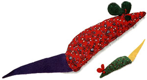
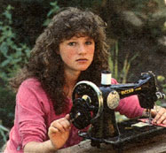
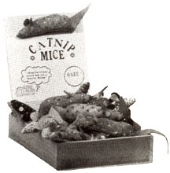

I raise my own catnip and stuff it inside home-sewn fabric mice. The little toys are a hit with cats-and their owners. There's no mistaking the fact that cats love the scent of catnip's aromatic oils. My tabby will smell, toss, chew and fondle her herb-stuffed mouse until she's in a state of euphoria.
You can sew up a few catnip mice just to keep your own pet happy, or you can think in bigger terms. I started making and selling the mice seven years ago, when I was nine years old, as a way of earning some money at home. I didn't need any expensive machinery or a lot of capital to start the business and could grow the main ingredient in my own herb garden. My mouse business has worked out well. In fact, it's turned out so well that, after I was selling 300 or 400 mice a year, I let my father take over running the business. My whole family, including my three brothers and sisters, now helps make the mice. They're sold all over the country; in fact, in the past year, we marketed almost 7,000 mice!
Growing the Crop
One of my favorite parts of the business is growing Nepeta cataria. Catnip is a member of the mint family and, like most mints, is easy to grow. Once established, the hardy perennial should thrive for years. The seeds are sold in just about any hardware or gardening store, as well as by mail. Sow them indoors in early spring, then set the young plants out (harden them off first) about six weeks later. You can also sow seed directly outdoors in the fall.
Catnip likes full sun but will tolerate some shade. It tends to be most aromatic if grown in a sandy soil, but will do well in most any ground but heavy clay. It's a very low-maintenance plant, except for one thing: You need to protect a new stand from cats! Otherwise, they may roll and play in it and the young plants may not survive.
Harvest the tops when the plants are in full bloom, then hang them upside-down in a warm, dry, shady place (or place them in an oven set on its pilot light or lowest heat). And you don't have to stuff your entire crop into fabric mice; the leaves can be used to make an herb tea that's so soothing you'll want to take a catnap yourself.
Mice Making
When you're making mice to sell, you should use bright-colored calicos. In my experience, these sell best. Pastels don't do well, but fabrics that go with the season (red and green for Christmas, heart-patterned material for Valentine's Day) sell fine. Felt works well for the eyes, ears and tail because it's stiff and doesn't fray at the edges.
For each mouse, cut two body pieces out of calico. Each piece should be shaped roughly like half a Valentine heart, about six inches long and two and a half inches at the widest point. The bottom can be rounded instead of pointed like a heart would be. Then cut the felt pieces: a long, thin triangle for the tail, a double-lobed two-and-a-half-inch-long ear piece (it looks sort of like a footprint) and two small circles for eyes.
Sew the body, right sides together, with the tail and ears in place. (Pinch the ear piece so the two lobes will stand up in forward-facing cupped ovals when the mouse is turned right side out, and catch the midpoint fold in the seam.) Leave an inch-long opening in the seam at the bottom of the mouse. Then turn the mouse right side out, and stuff it with a mixture of dried catnip and your choice of padding (I use polyester).
Close the stuffing hole with careful handstitching. Then put a dot of glue on each eye (I use leather cement), and stick it in place. You might also want to thread a needle with embroidery floss and make three sets of whiskers on the face.
I started out selling my mice at summer arts and crafts fairs. That worked great until winter came and there weren't any more fairs. So I looked for other possibilities and discovered that I could put them in gift and pet shops. Some of the stores will take them only on consignment (they pay for just the mice they sell). That's all right when you're starting out, but you really should push for the store to buy the mice up front. That way you get all your money in one chunk, and the store's manager will be more likely to display your product well rather than stick it somewhere in the back.
Each catnip mouse costs me only 25 cents in materials. I sell them for $1.50 apiece at craft fairs and I charge stores $1.17 each. (A store can buy a box of 50 at a time for a total of $58.50.) I get orders by sending letters with free samples to pet and gift stores listed in the yellow pages. I follow these up with phone calls to secure the orders. I include a wooden display box at no extra charge (the sign on the box has a picture of a cat saying, "I wish my human would buy me a catnip mouse"). That way the storekeeper doesn't have to come up with a way of displaying the mice. And I mix several different colors of mice in each order, because people like to sort through the box and pick out their favorite color.
It probably could go without saying that your cat will be happier if it has a little Nepeta cataria in its life. And you may be happier yourself if you start a mice-making business like the one I have.
Lupin Tapert (34714 N.E. 145, Duvall, WA 98019) lives on a rural homestead and has been home-schooled since second grade. She will send a sample catnip mouse to MOTHER readers for $1.50 plus 500 shipping and handling.
We would like to remind younger readers that we're glad to buy and publish well written articles from children and teenagers concerning their interesting, original projects or small businesses. However, we recommend that you query (that is, send us a letter telling about the story you'd like to do) before writing a full article. Send your queries to Mother's Children, Mother Earth News, P.O. Box 70, Hendersonville, NC 28793.
|
 Homemade catnip mice can make your feline happy-and can make you a profit. |
 |
 |